1. Za proces fotosinteze biljke koriste?
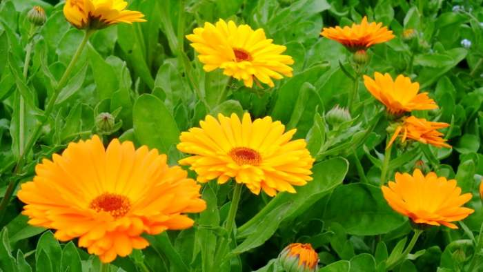
2. Koja je osnovna zivotna jedinica ?
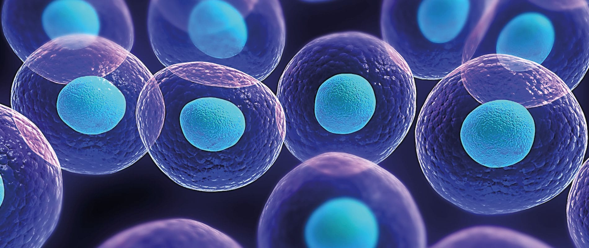
3. Koji dio oka je odgvoran za njegovu boju?
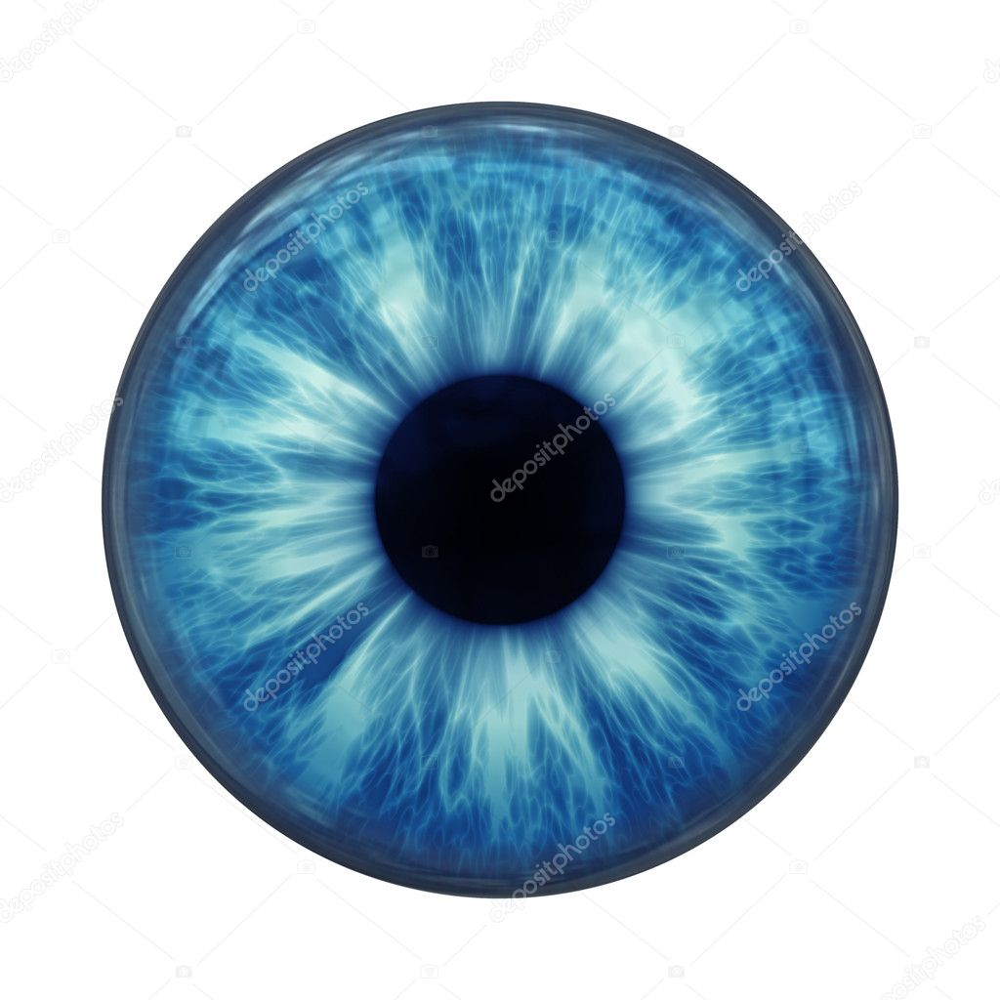
4. Prirodni indikator zagadjenosti vazduha su:
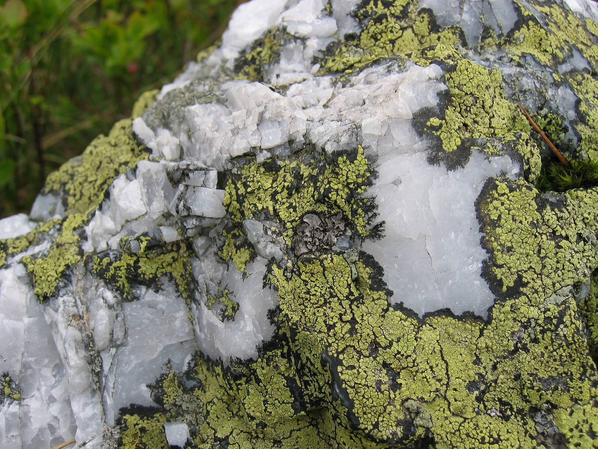
5. U tijelu covjeka ima:
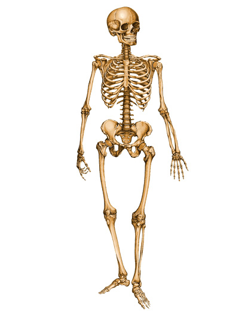
6. Prosjecne dnevne energetske potrebe covjeka su:
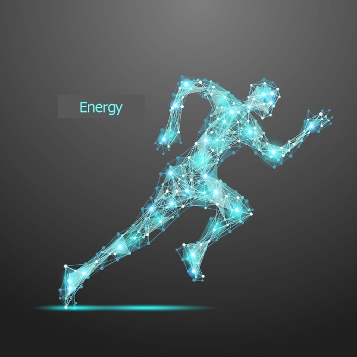
7. Puls u mirovanju kod odrasle osobe iznosi?
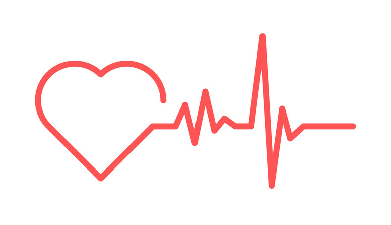
8. Gdje se u celiji nalazi najvise DNK?
9. U tijelu odrasle osobe teske 70kg ima:
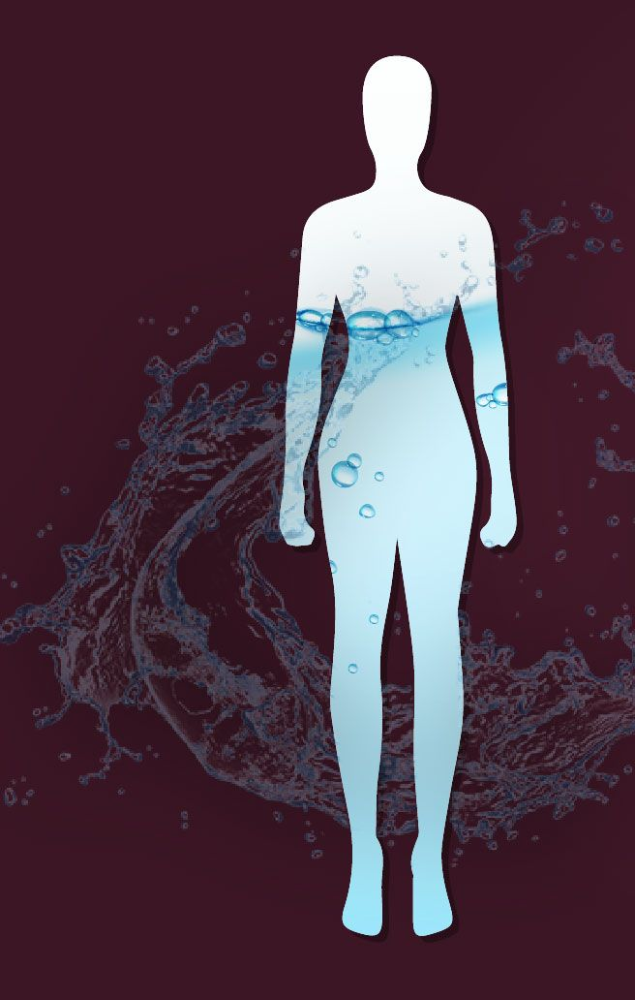
10. Koji dio jezika registruje gorak ukus?
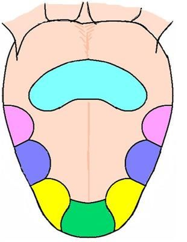
11. Insulin regulise nivo:
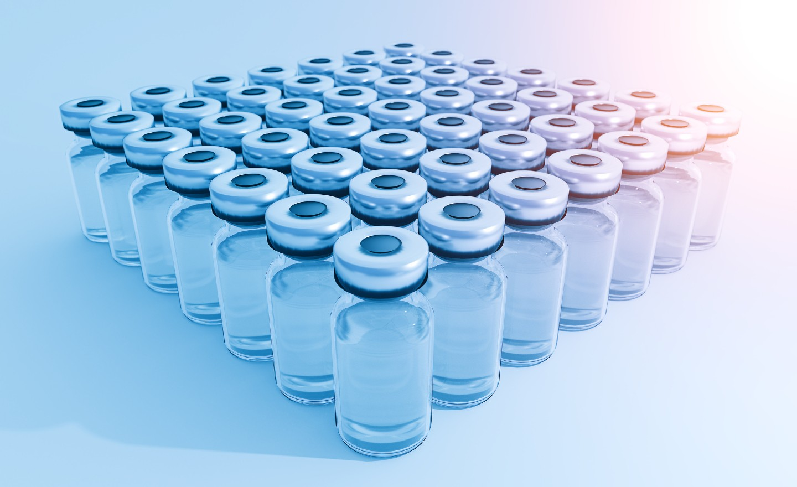
12. Kralj zivotinja je:
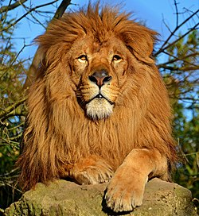
13. Najveca macka je:

14. Rakuni su vrsta:
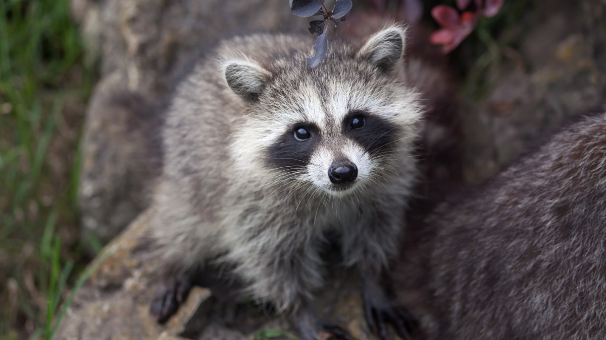
15. Najveci raspon krila ima ?
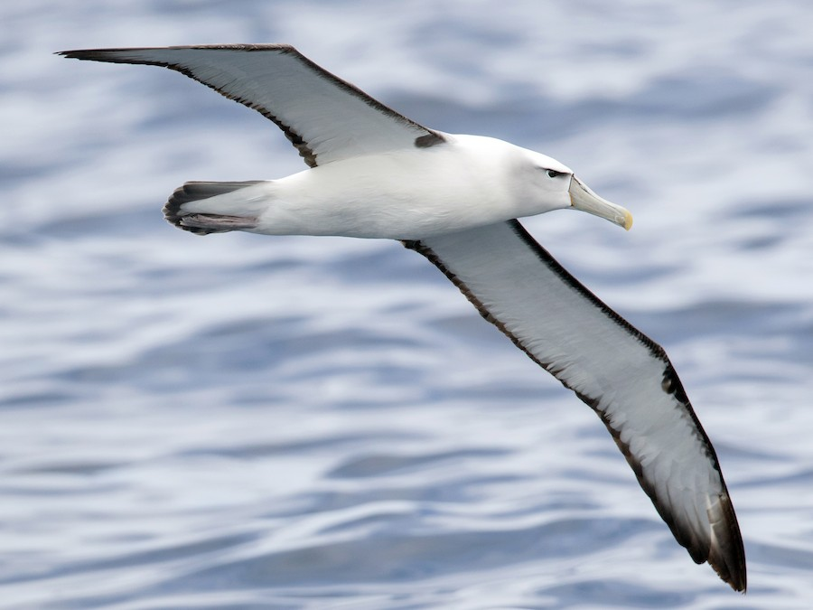
16. Duzina zivota prosjecnog psa je:
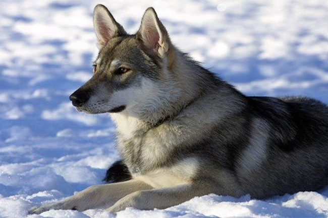
17. Najbrza zivotinja je:
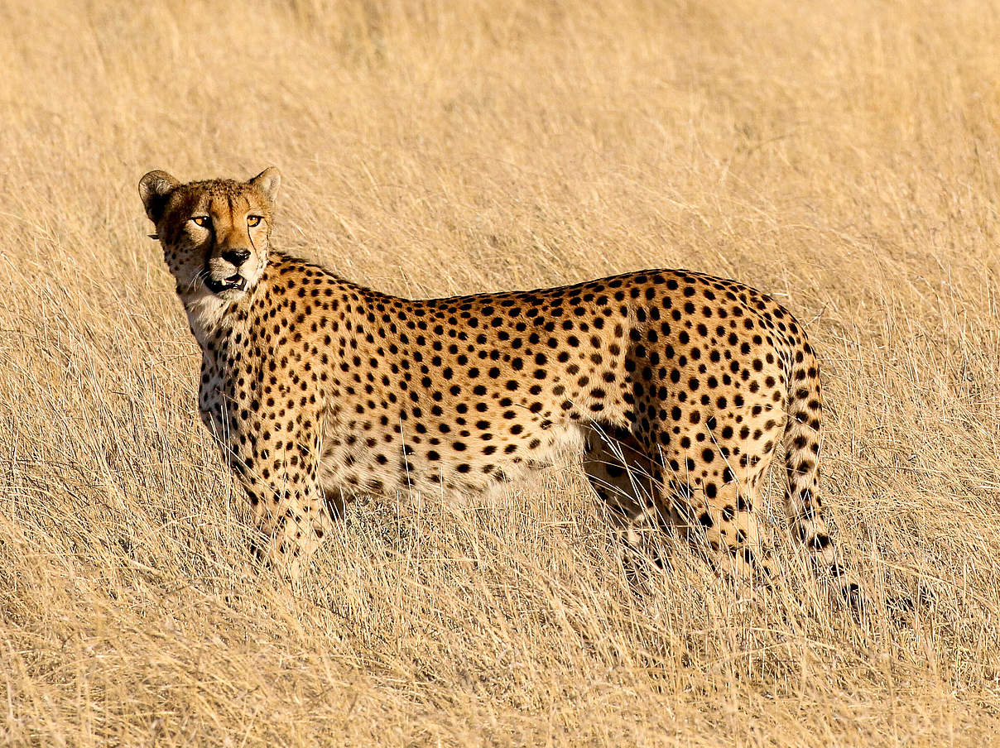
18. Koji je najveci ljudski organ?
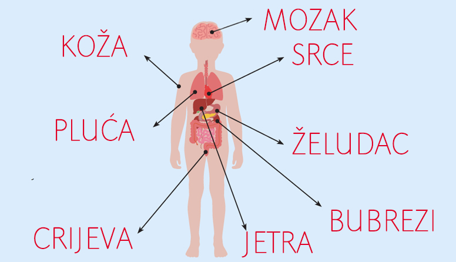
19. Koliko celija nase tijelo proizvede svake sekunde?
20. Plima i oseka nastaju pod uticajem:
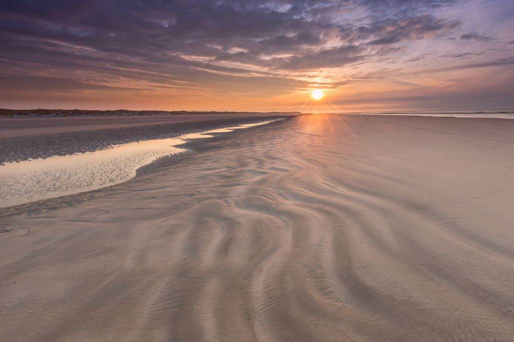
21. Koja je ovo zivotinja?
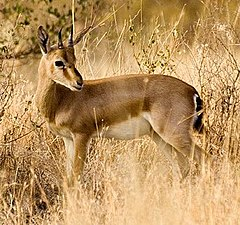
22. Misici su za kosti spojeni pomocu:
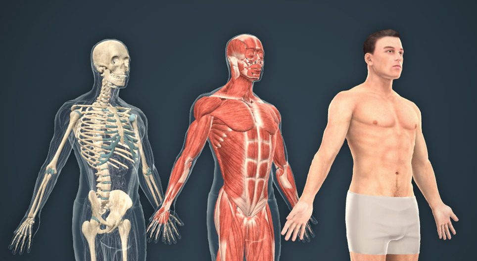
23. Koji je najjaci ljudski misic?
24. Koliko misica ima u ljudskom tijelu:
25. Najinteligentnija zivotinja na svijetu poslije ljudi:
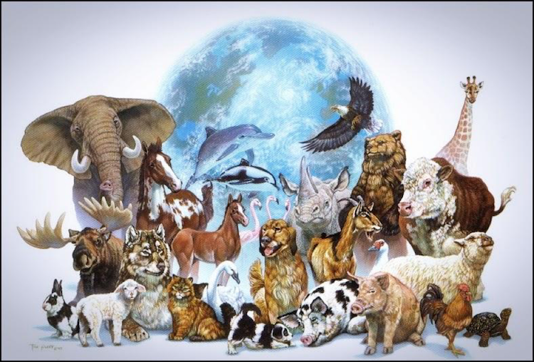
Isteklo vam je vrijeme!
Kraj!